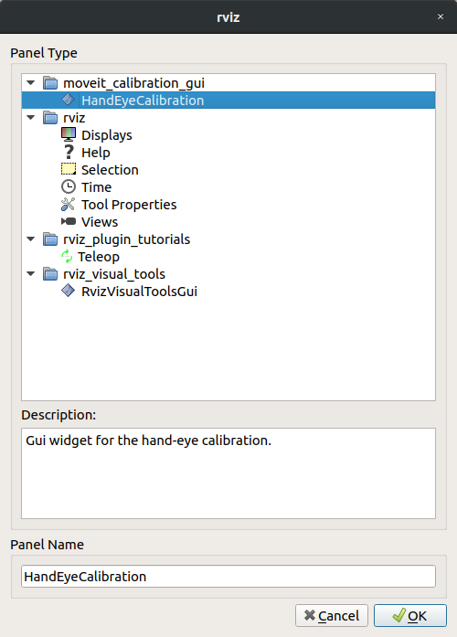

Hand-Eye Calibration
The MoveIt Calibration package provides plugins and a graphical interface for conducting a hand-eye camera calibration. Calibrations can be performed for cameras rigidly mounted in the robot base frame (eye-to-hand) and for cameras mounted to the end effector (eye-in-hand). This tutorial presents the eye-in-hand case.

Getting Started
While it is possible to go through most of this tutorial using just a simulation, to actually complete a calibration you will need a robotic arm and a camera.
If you havent already done so, be sure to complete the steps in Getting Started. Also, set your arm up to work with MoveIt (as described in the Setup Assistant Tutorial).
This tutorial also requires a camera, publishing images and a sensor_msgs/CameraInfo topic with good intrinsic
calibration parameters and an accurate coordinate frame. (Conduct an intrinsic camera calibration by using the
camera_calibration package, if necessary.)
Clone and Build the MoveIt Calibration Repo
In your workspace src directory, clone MoveIt Calibration:
git clone git@github.com:ros-planning/moveit_calibration.git
Then, make sure you have the appropriate dependencies and build the package:
rosdep install -y --from-paths . --ignore-src --rosdistro melodic
catkin build
source devel/setup.sh
Launch RViz and Load Calibration Plugin
Launch the appropriate MoveIt demo for your robot. For instance, roslaunch panda_moveit_config demo.launch.
In the RViz Panels menu, choose Add New Panel:

Then, select the HandEyeCalibration panel type:
The panel will be added with the Target tab active.
Create and Print a Target
Now we will create a visual calibration target. This target has distinctive patterns that are easy to identify in the image data, and by providing a measurement of the target size, the pose of the target in the cameras coordinate frame can be estimated. When conducting a hand-eye calibration, we do not need to know the targets precise locationas long as the target is stationary in the robots base frame, the hand-eye calibration can be estimated from a sequence of 5 or more poses.
In the Target Params section of the Target tab, we will use the default target parameters:
- markers, X: 3
- markers, Y: 4
- marker size (px): 200
- marker separation (px): 20
- marker border (bits): 1
- ArUco dictionary: DICT_5X5_250
Press the Create Target button to create the target image:

Save the target image using the Save Target button, and print out the image. Feel free to experiment with the target parameters to see how they affect the target, but be sure to remember the parameters used for the target you printyou will need to input the same parameters for the target to be recognized.
The target must be flat to be reliably localized by the camera. Laying it on a flat surface is sufficient, or it can be mounted to a board. Measure the marker width (the outside dimension of one of the black squares), as well as the separation distance between markers. Enter these values, in meters, in the appropriate boxes in the Target Params section. Also, select the appropriate topics in the Image Topic and CameraInfo Topic drop-down menus.
Finally, place the target near the robot, where it can be easily seen by the camera.
Geometric Context
The second tab, labeled Context, contains the geometric information necessary to conduct the calibration.
- Set the Sensor configuration to Eye-in-hand.
- The Sensor frame is the camera optical frame (using the right-down-forward standard, as specified in REP 103).
- The Object frame is the frame defined by the calibration target, which is called handeye_target by default.
- The End-effector frame is the robot link rigidly attached to the camera.
- The Robot base frame is the frame in which the calibration target is stationary.
The FOV section controls the rendering of the cameras field of view in RViz. To see the FOV, add a MarkerArray display, and set it to listen to the /rviz_visual_tools topic. (It may not appear immediately.)
Finally, it is not necessary to set an initial guess for the camera pose, but it is worth noting that once a calibration has been calculated, these fields will be updated with the new calibration.
Collect Dataset
Next, we will capture a calibration dataset. We need to capture several samples to ensure a good calibration. The robot kinematics provide the end-effectors pose in the robot base frame, and the calibration targets pose in the camera frame can be estimated, as mentioned above. If the targets pose in the robot base frame were known accurately, only a single observation of the camera-target transform would be necessary to recover the cameras pose in the end-effector frame. The direct camera-to-end-effector transform is equivalent to the composite camera-to-target-to-base-link-to-end-effector transform. A better option, however, is to combine the information from several poses to eliminate the target pose in the base frame from the equation, as described in this paper by Kostas Daniilidis.
Each sample in our calibration dataset, then, comprises a pair of poses: the end-effectors pose in the robot base frame paired with the calibration targets pose in the camera frame. Once five such samples have been collected, the calibration can be calculated.
The Calibrate tab provides the tools to collect the dataset and calculate and export the calibration. At this point,
it is also helpful to add an image panel to the RViz display to see the target detection in the camera view, which is
published on /handeye_calibration/target_detection.

On the Calibrate tab, you can select which calibration solver to use in the AX=XB Solver drop-down. The Daniilidis
solver (from the paper referenced, above) is the default and is a good choice in most situations. The Planning Group
is the joint group that will be recorded, so should be set to the appropriate group for the arm (in the
panda_moveit_config package, the panda_arm group should be used).
When the target is visible in the arm camera, and the axis is rendered on the target in the target detection image, you are ready to take your first calibration sample (pose pair). Click the Take sample button in the Manual calibration section, and a new sample will be added to the Pose samples list on the left side of the panel. If you expand a sample, you will see it contains two transforms, base-to-end-effector, and camera-to-target.
Next, you can move the arm to a new pose using the MotionPlanning panel, or use your robots teaching pendant or free drive mode, if it has one, and click Take sample again. Be sure to include some rotation between each pair of poses, and dont always rotate around the same axisat least two rotation axes are needed to uniquely solve for the calibration (see the Daniilidis paper, linked above, for the explanation why).
As you take manual samples, the robot joint states are recorded, so that the same poses can be used again to recalibrate in the future. The number of recorded states is shown to the right of the progress bar at the bottom of the panel, and the states can be saved to a file using the Save joint states button in the Settings section.
Calculate a Calibration
Once you have collected five samples, a calibration will be performed automatically, and updated each time a new sample is added. The calibration will improve significantly with a few more samples, and will typically plateau after about 12 or 15 samples. The position and orientation will be displayed on the Context tab, as mentioned above, and the published TF will be updated as well. Click Save camera pose to export the calibration result. This will create a launch file with a static transform publisher containing the calibrated camera transform.
Open Source Feedback
See something that needs improvement? Please open a pull request on this GitHub page